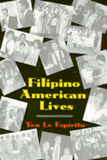

<body bgcolor="#FFFFFF" text="#000000" link="#0000FF" vlink="#CC0000" alink="#CC0000"><center><hr width="350" size="1" align="center" noshade>First person narratives by Filipino Americans reveal the range of their experiences&#151before and after immigration<hr width="350" size="1" align="center" noshade><p><a href="https://cdcshoppingcart.uchicago.edu/Cart/ChicagoBook.aspx?ISBN=9781566393164&&PRESS=temple" target="_top">Buy this book!</a> | <a href="https://cdcshoppingcart.uchicago.edu/Cart/Cart.aspx?PRESS=temple" target="_top">View Cart</a> | <a href="https://cdcshoppingcart.uchicago.edu/Cart/Cart.aspx?PRESS=temple" target="_top">Check Out</a></p><p></p></center><!--none//--><h1>Filipino American Lives</h1>
<h3>Yen Le Espiritu</h3>
<P>cloth 1-56639-316-7 $77.50, Apr 95, <FONT COLOR=#990033>Out of Stock Unavailable</FONT>
<br>paper 1-56639-317-5 $29.95, Mar 95, <FONT COLOR=#990033>Available</FONT>
<br>Electronic Book 1-43990-557-6 $30.95 <FONT COLOR=#990033>Out of Stock Unavailable</FONT>
<BR> 240 pp
6x9
1&nbsp;table 1&nbsp;map(s) 1&nbsp;figure 13&nbsp;halftones
</P><BLOCKQUOTE><I>"...a useful means of understanding ethnic identity and Filipino American history."</I>
<BR>&#151<b><i>The Diversity Factor</i></b><I></I></BLOCKQUOTE>
<p>Filipino Americans are now the second largest group of Asian Americans as well as the second largest immigrant group in the United States. As reflected in this collection, their lives represent the diversity of the immigrant experience and their narratives are a way to understand ethnic identity and Filipino American history.
<p>Men and women, old and young, middle and working class, first and second generation, all openly discuss their changing sense of identity, the effects of generational and cultural differences on their families, and the role of community involvement in their lives. Pre- and post-1965 immigrants share their experiences, from the working students who came before WWII, to the manongs in the field, to the stewards and officers in the U.S. Navy, to the "brain drain" professionals, to the Filipinos born and raised in the United States.
<p>As Yen Le Espiritu writes in the Introduction, "each of the narratives reveals ways in which Filipino American identity has been and continues to be shaped by a colonial history and a white-dominated culture. It is through recognizing how profoundly race has affected their lives that Filipino Americans forge their ethnic identities&#151identities that challenge stereotypes and undermine practices of cultural domination."
<BR>&nbsp;<h2>Excerpt</h2><P>Excerpt available at <a href="http://www.temple.edu/tempress">www.temple.edu/tempress</a></p>
<BR>&nbsp;<h2>Reviews</h2>
<p><I>"</I>Filipino American Lives<I> offers a collection of 13 life stories as told by the people who lived them.... [F]rom these disparate backgrounds, a Filipino American identity emerges and Espiritu does an excellent job of letting the reader see its complexity."</I>
<BR>&#151<b><I>Pacific Reader</I></b>
<BR>&nbsp;<h2>Contents</h2><P>
<p>Preface
<br>Acknowledgments
<br>Introduction: Filipino Settlements in the United States
<br>1. "We Have to Show the Americans that We Can Be as Good as Anybody" &#150 A. B. Santos and Juanita Santos
<br>2. "I Was Used to the American Way of Life" &#150 Ruth Abad
<br>3. "Sometimes, I Am Not Sure What It Means to Be an American" &#150 Connie Tirona
<br>4. "My Dream Is to Be Able to Give Something Back to My Country and My People" &#150 Luz Latus
<br>5. "My Experience Is Atypical" &#150 Paz Jensen
<br>6. "I Sacrificed My Five-Year College Education to Become a Steward" &#150 Leo Sicat
<br>7. "I Only Finished First Grade" &#150 Nemesia Cortez
<br>8. "International Medical Graduates Are Tested Every Step of the Way" &#150 Edgar Gamboa
<br>9. "PASACAT Became My Whole Life" &#150 Anamaria Labao Cabato
<br>10. "I Knew that I Wanted to Be a Naval Officer" &#150 Daniel Gruta
<br>11. "I Offended Many Filipinos Because I Was an FOB" &#150 Dario Villa
<br>12. "I Could Not Cope with Life" &#150 Joey Laguda
<br>13. "Everybody Seemed to Be Either White or Black, a Full Race" &#150 Lisa Graham
<br>Bibliography
</P><BR>&nbsp;<H2>About the Author(s)</H2>
<P><b>Yen Le Espiritu</b> is Associate Professor in the Department of Ethnic Studies at the University of California, San Diego, and the author of <i><a href="898_reg.html" target="_top">Asian American Panethnicity: Bridging Institutions and Identities</a></i> (Temple).</P>
<BR><H2>Subject Categories</H2>
<p><A HREF="/tempress/asian_amer.html" TARGET="_top">Asian American Studies</a>
<BR><A HREF="/tempress/race.html" TARGET="_top">Race and Ethnicity</a>
</p>
<BR><h2 class="inpageheading">In the series</H2>
<P><I><a href="http://www.temple.edu/tempress/asam_history.html" onMouseOver="window.status='Click for other books in this series!'; return true;" onMouseOut="window.status=''; return true;" target="_top">Asian American History and Culture</a></i>, edited by K. Scott Wong, Linda Trinh V�, and Cathy Schlund-Vials.
</p><p>Founded by Sucheng Chan in 1991, the <I>Asian American History and Culture</I>, series has sponsored innovative scholarship that has redefined, expanded, and advanced the field of Asian American studies while strengthening its links to related areas of scholarly inquiry and engaged critique. Like the field from which it emerged, the series remains rooted in the social sciences and humanities, encompassing multiple regions, formations, communities, and identities. Extending the vision of founding editor Sucheng Chan and emeriti editor Michael Omi and David Palumbo-Liu, series editors K. Scott Wong, Linda Trinh V�, and Cathy Schlund-Vials continue to develop a foundational collection that embodies a range of theoretical and methodological approaches to Asian American studies.</p>
<p align="center"><a href="https://cdcshoppingcart.uchicago.edu/Cart/ChicagoBook.aspx?ISBN=9781566393164&&PRESS=temple" target="_top">Buy this book!</a> | <a href="https://cdcshoppingcart.uchicago.edu/Cart/Cart.aspx?PRESS=temple" target="_top">View Cart</a> | <a href="https://cdcshoppingcart.uchicago.edu/Cart/Cart.aspx?PRESS=temple" target="_top">Check Out</a></p><p><font face="Arial" size="1"><a href="copyright.html" onMouseOver="window.status='Web Copyright Policy';return true;" onMouseOut="window.status=''" title="Web Copyright Policy">&copy;</a> 2015 <a href="http://www.temple.edu" target="new" onMouseOver="window.status='Link to Temple University home page';return true;" onMouseOut="window.status=''" title="Link to Temple University home page">Temple University</a>. All Rights Reserved. http://www.temple.edu/tempress/titles/1157_reg.html</font></p>